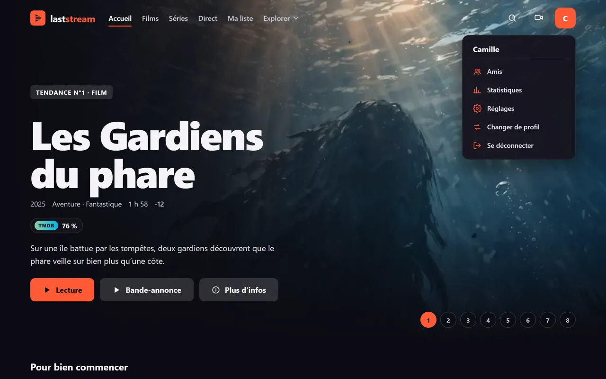
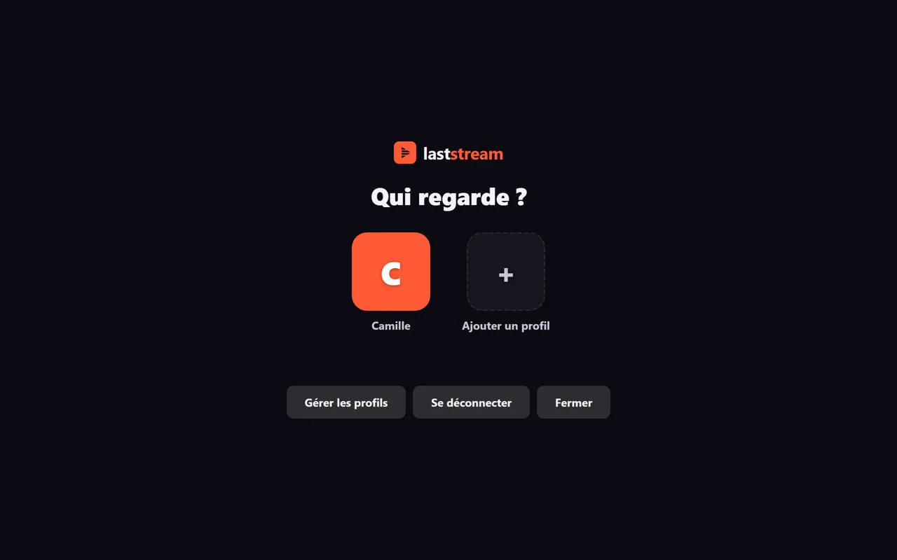
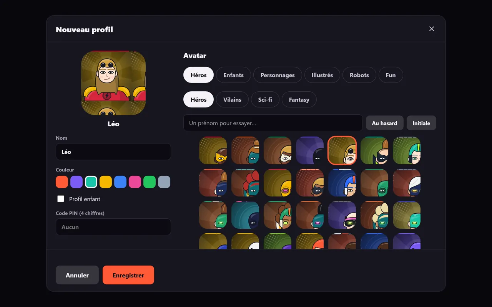
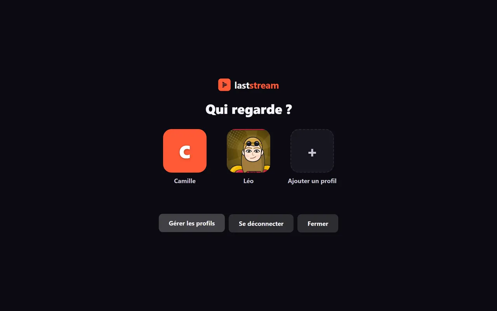

Prérequis
- Un compte connecté.
- Seul le profil principal (ou quelqu'un qui connaît son code) peut ajouter des profils.
Étapes
-
Touche ton avatar en haut à droite, puis « Changer de profil ».

-
Sur l'écran « Qui regarde ? », choisis « Gérer les profils », puis « Ajouter un profil ».

-
Dans « Nouveau profil », saisis le Nom (40 caractères maximum).

-
Choisis une Couleur parmi les 8 pastilles et un Avatar.
-
Facultatif : un Code PIN de 4 chiffres pour protéger le profil.
-
Touche « Enregistrer ». Le profil apparaît sur « Qui regarde ? ».
